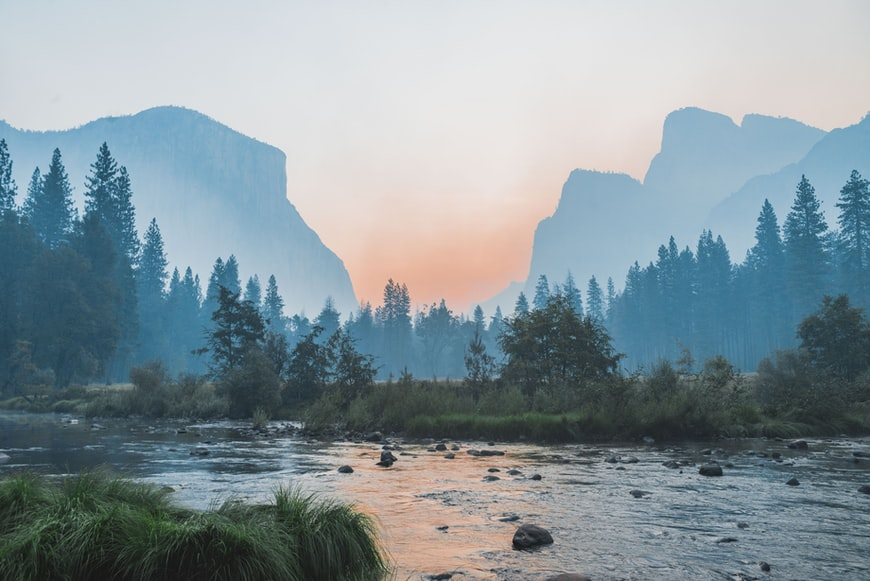

Forest Conservation
Play related games
Comming soon ...
About Forest Conservation
Forest conservation as the name suggests is the preservation and the protection of forests. It also involves the reversal of deforestation and environmental pollution. The preservation of all natural resources is absolutely essential for the balance of our ecosystem.
Tree Plantation
This is the process by which we plant more trees in the area. We try to increase the forest cover by manual transplantation, or fresh plantation of trees. It is an attempt to balance our ecosystem to reduce the effects of deforestation and environmental pollutions of all types.
Protect Forest
The forests can be protected in the following manner: